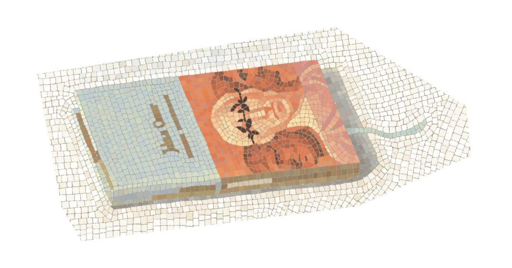

Mosaic 2018 #1
I have seen home of who is truly addicted to collecting things. These people do believe their collection can be used one day. But I have distinction between those who collect thing as a kind of insurance, like the property of rich people, that won't be fully utilized, and some others who recall some memories with their collections. To the latter, they are priceless -- to preserve them is to preserve memories.
I have some collections too, for example my wedding ring wearing on my left hand. According to the S.P.E.C.I.A.L. tradition of Fallout, there are "E + 1" (Endurance + 1) and "L + 1" (Luck + 1) engraved inside of the ring. But, if you did once see the house of true collector, you should know how unprofessional I am, because I will never preserve anything I won't use, and I don't collect ex-libris nor plant specimens at all. I do stare at the leave fall off the tree, admiring the magnificent structure, or even sketch it. But after that, I throw it away.
Well of course, if collections are not only touchable materials, then I am a true collector either, because I love to collect these two kind of things:
- Knowledge that I have understood;
- The feeling that I have experienced;
The former is no doubt in the realm of logic. I have a long long list recording the knowledge of mathematics I learned, from Euclidian Geometry to Calculus. Of course, it is not necessarily to be remember all of them -- for most of them can be deduce from some much simpler axioms -- I write them down just because they contain my thinking.
It is a little bit harder to grab a feeling than to understand a mathematical definition. In the philosophical term, we separate aesthetics and reason into different parts, but real world tells us that sometime you can't even know what is aesthetics or reason. That is why the definition of "feeling" is always fuzzy. Commonly, what we feel is actually mix with our understanding. For example, cultural thing come in when we are admiring a human body. But commonly, any way, when something is too complicated to be recognized, we call it "feeling".
Most of our feelings are diving in our mind, they won't be recalled, unless there are events to recall them, like the pressure of your feet when you walking on a certain street. And when a distance memory is recalled, it will be somehow modified with your current mental needs. That's why recalling a dream can be a beautiful experience. In memory, things in dream can be perfect, even there is only a street that is as normal as any street in the city.
People learn art may have a common experience: whatever it is a master piece or a landscape staring at you, you feels it is a little bit unreal until you try to draw it. You might be surprised:"Oh, I didn't there is a spot of red!"
This is what I called "grab". It is the motivation of most of my paintings.
I think, the reason why botanists in old time were addicted to organising plant classification is not only the for the so called "scientific spirit", but is also a kind of greedy venting in the knowledge field, and a kind of desire wants to leave traces in outer world. What annoy me is: I feel I can't grab any feeling that I experience. They look dim and short. If I want them to remain inside of me, I need to do something!
So, I always paint in a careful way -- sometime "mechanical", as I was told -- and try to cover my observation all over the object -- like what you see here: pixel mosaic. Sure I know, this also can be useless to "grab" something, and can be a little bit of religious, but, still, I have to do something, besides, they looks nice.
After I finished painting, I also do some arrangement and research on what I painted, like to write some related event, or related memory -- just like what Black Isle have done in Fallout 2. I do this for spending my time, and, also, for leaving deeper memory of these feelings. I think, maybe that is a way to collect feelings.
Now, allow me to introduce some of my collections in one of my pixel mosaic. The introductions might be chaotic and full of mistake on gramma (English is my second language by any means), but I'm sure they are readable.
Jun, 2018
Shanghai
Collections
Buxus
- Plant
- Ignored
I picked this brach up near my home. It belonged to a very common plant in Shanghai, and may be too common to be noticed. No one cares about what variety it is. I researched the investment report written 20 years ago for building the residential area where I am living right now, and it tells, the plant is a kind of buxus.
Because of the bad maintenance of the community, the soil is quite dry these years, so the buxus is not grown well, that the branches are easy to be broken.
Julius Caesar
- Classic drama
- English Renaissance
- Shakespeare

Learning Shakespeare is never a good idea if you want to learn English from begin. His English is dramatic, but more than that, it is hard and quite different from what we are using in our modern daily life. What worse picking wrong text book at the wrong level makes your language tacky, as we called "grungy Shakespeare" -- We can hear this kind of language from Anti-mage in DotA II.
But, by any means, this little book is well designed. the color of gold, pale blue, dim red, and pink are beautifully combined. There is the portrait of Julius Caesar whose eyes is covered by the laurel. Agrippa and Octavia are standing beside him. On the title page, there is beautiful repeat pattern of olive branch printed.
Giotto
- Art book
- Fresco
- Early Renaissance
Giotto di Bondone is my favorite artist. By the way I named my second cat Giotto di Zhao. But, when I was in senior high school, my art teachers was confused about my taste, because they think Giotto won't teach me how to pass the exam for entering an art collage in China. After I toughly pass the exam and entered Shanghai art collage, I met two friends, Dai Yongcheng, and Tao Junyi, whose taste are as "weird" as mine, and also almost failed to pass the exam.
Tao Junyi was a burly and honest son from a rich family. He traveled around the world with the parents since he was a kid. This Giotto was brought from Italy. It includes almost all of the fresco in Cappella degli Scrovegni, and some other fresco and tempera by Giotto. This book is rich!
As we are told by Dai Yongcheng, Tao Junyi and I are addicted to collect things from each other, until today. To be honest, the word "collect" here means loop, rob, or steal. It is a tradition of our friendship. So, no doubt, This Giotto was "collected" from his book shelf.
The book is written in Italian that I can't read, but, still, I like to flip through it so much, that some pages has been broken a little bit.
Framed post card of Odyssey
- Greek mythology
- Penguin
- Hero
When I was a kid, my mother told me a lot of Greek mythology. Among them, there are 3 pieces I can never forget:
- Achilles and his ankle;
- Theseus killed Minotaur;
- Jason and Golden Fleece
I still believe that Ancient Greek stories deal a fatal influence during my childhood, otherwise, I won't hate the happy ending like Beauty and Beast. I don't like most of the fairy tales, because in these stories, the good person won't die just because they are good, and they are good just because the author tells. I do agree what Herodotus tells in his book. Who is the happiest man in the world? Well, we can't tell until his/her death.
I still remember how Jason's story ends.
After a long journey of the heroic adventure, Jason went back to Iolcus, with his Argo, the legendary ship, and his wife Media, a beautiful woman with magic. His father, the king Aeson, was killed by his uncle. This time, Jason killed his uncle, then went to Corinth with Media to spend their happy life. Well, a happy ending right? No, it's not over yet. One day, Jason cheated Media. He felt in love with the daughter of the king of Corinth, and born two boys. Media was so angry, that she kill the boys, then went away, and left Jason alone. Jason was despair. He went back to Iolcus again, and walk alone the sea shore. Finally, he found Argo. He hidden into the shadow of Argo and cried for his fate. Argo was too old and the ship was ruined. Suddenly, a wood broke down, hit Jason's head, and finished his life. The end.
Dirty sock
- Dirty
- Smelly
Like some other unprofessional artist, I used to only paint "glory" objects, and ignore the real world. I also knew, the great artists, like Bruegel, Dürer, Van Gogh, Matisse, or Cézanne, find beauty from daily life, but fear push me away from the outside world. So, for years, my paintings were too pretentious to be accepted by myself right now.
I had spent years to accept what around me, then they just became shining and charming that I hadn't experienced before. Changing shadow, touchable surface. These things are so real, and make me addicted. I felt I never see those before.
Cento undici Disegni di Maestri stranieri
- Art book
- Antique
- Sketch

This little book is published in 1972. It is 11.3cm long and 8cm wide. It is brought from an antique book store in Florence. The title "Cento undici Disegni di Maestri stranieri" printed on the cover means "One hundred and one foreign master piece". It contains 101 sketches from 14 century to 19 century, by non-Italian artist, including Van Eyck, Dürer, Holbein, Bosch, Rembrandt, Goya, Degas, Renoir, Van Gogh, and Picasso, etc.
The book is beautifully made. All the pages are heavy hand made paper, and carefully bound by cotton strings. The tearing edge is remained, and was protected well.
Herodotus' History
- Book
- Greco-Persian Wars
- Herodotus
- Penguin
I used to read Herodotus's History of Chinese version, translated by Professor Wang Yizhu. I have to say, his translation is nice and interesting to read. According to my impression of Ancient Greek language, I guess this translation expresses the oral sense of the language. There is no such romantic things added to the book as translator loved to do 100 years ago. But, there are still some problem in this translation, which is the translation of the names. For example, we have a dozen of translations of the name Delphi (Δέλφοι). So further reading on internet according to a Chinese version can also be a nightmare. That is why I brought this English version. It is used as a dictionary when I searching on Wikipedia.
The photo of Mr. Si Shi Er
- Photo
- Forty-two
- Ultimate answer of everything
"Si Shi Er" ("四十二") means Forty-two in Chinese, and it is the name of my first cat, born in Jun 1, 2016. Mr. Si Shi Er is an exotic shorthair, unsocial, stubborn, and arrogant. Now he's living with Giotto (the second cat of mine), and is quite annoy by this little brother.
The life time of a cat is about 1/4 of ours. It means Mr. Si Shi Er will die in less than 20 years. It is such a tragedy that my wife and I have already begun to make his portraits for our genealogy -- I hope it should looks like the family trees in Nuremberg Chronicle!
Fragments from Knossos
- Ancient stuff
- Crete
- Minoen Civilization
Nov 2017, My wife and I visited the palace of Knossos, 20 km south of Heraklion, Crete. Obviously, the palace has been well looted. The so called "repair" by Heinrich Schliemann also left bad image to us.
But still, it is a good place to take a walk. While we were wandering around the ruins, I was talking about what I know about Schliemann and story of how Theseus killed Minotaur. We believe the narrow and maze-like palace (possibly for defending enemy) inspired the bards to imagine the story of the monster. The relationships in the story also related to the distant memories. The memory of the relationship between the continent and Crete also push this story into a heroic drama. The memory possibly starts from the time when Mycenaean occupied Crete.
While we were walking around the valley 2 or 3 km far from the palace, I found an unordinary bulge from the dirt. I dig it out with my fingers, and wipe the dirt on the surface. Then the texture of artifacts appeared.
Aphrodite
- Statue
- Copy
There is a souvenir shop near the Temple of Zeus in the downtown of Athens. They sell copies of ancient statues, accessories, and some art books which are not so well printed. There are hundreds of shop like this in Athens. I had went to most of them and brought nothing -- what I really want to buy is the treasures in museums.
LU Shu believe I won't not be that rich to buy a true statue from Ancient Greek time until my death -- I believe so too. So she spent 96 euro to buy two of the copies in the shop as presents for me. One of both is nameless, the other is Aphrodite. According to the owner of the shop, what they sell is the best copy we can find in shops in Greece. I believe so, they are beautifully molded, and looks closely to the picture I have seen on art books. But the owner also told us, like, the statue Aphrodite can protect our marriage and love, the statue of a snake protect us from diseases, etc. For this, we just expressed our gratitude...
Bear for iPhone X
- App
- Markdown
The first time I wrote markdown is on Bear, the winner of Design Award of Apple 2017. It is perfectly designed on UI and UX, and I used that for a year.
Now I'm using MWeb, because it supports LaTeX formula, while bear doesn't. But for the sake of the beautiful design, I'm still waiting for an update of Bear to support this.
Santai Gafu
- Art book
- Ukiyo-e
In 1816, Japanese artist Katsushika Hokusai published his Santai Gafu, a series of his printmaking, for teaching people how to draw landscape, plants, humans, and artifacts, etc.
This little book of Santai Gafu was brought from Ikebukuro, Tokyo. It is the witness of how I proposed LU Shu, so it is priceless to me.
The New Herbal of 1543
- Leohart Fuchs
- Taschen
I didn't buy Leohart Fuchs's New Herbal for reading (I don't understand the language at all), but for the design.
Kindle
- Present
- Book reader
LU shu brought this kindle as a present for my birthday sep 28, 2016.